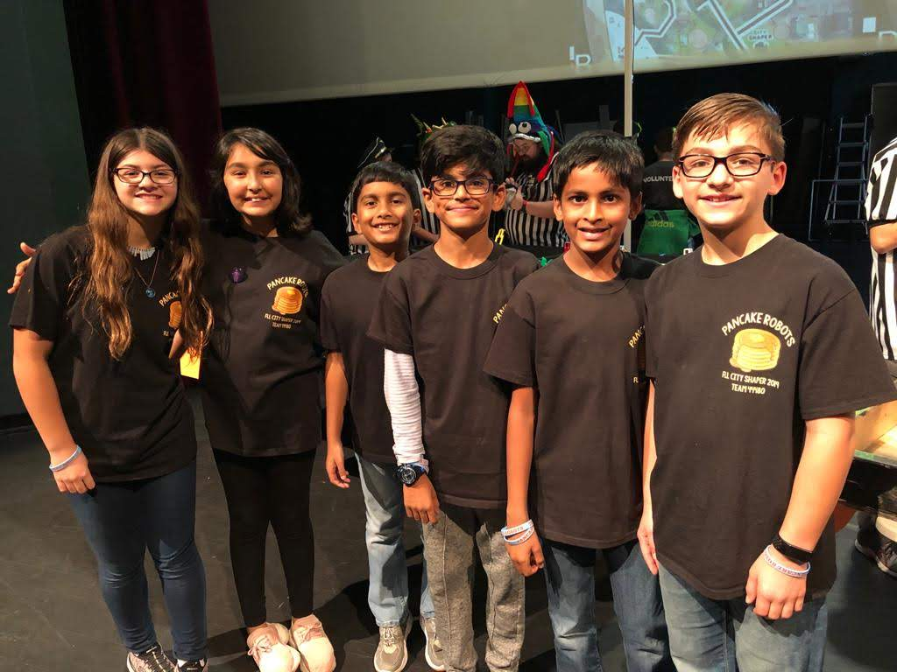
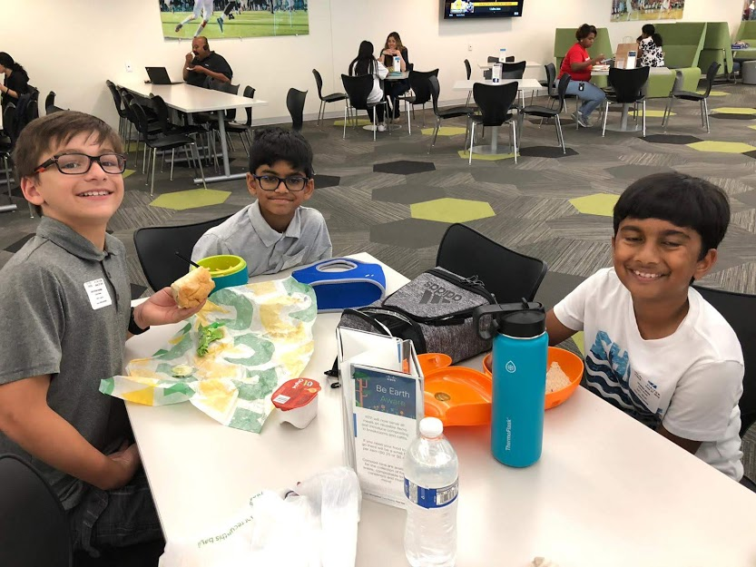
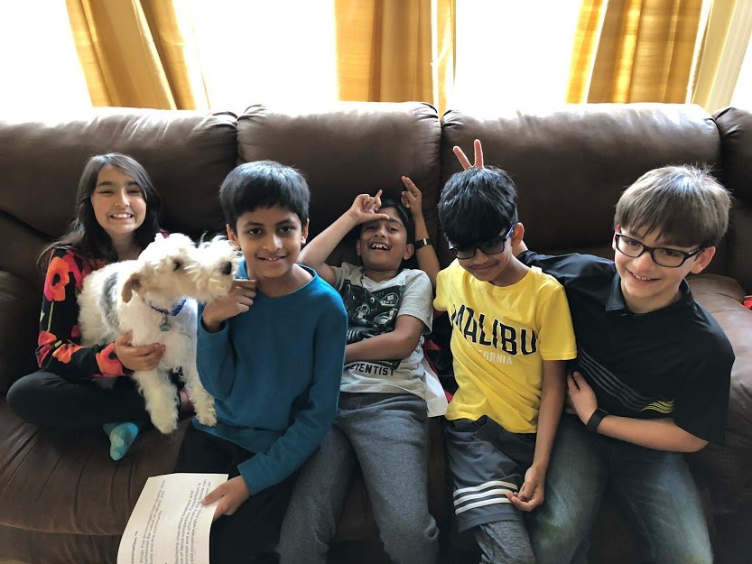
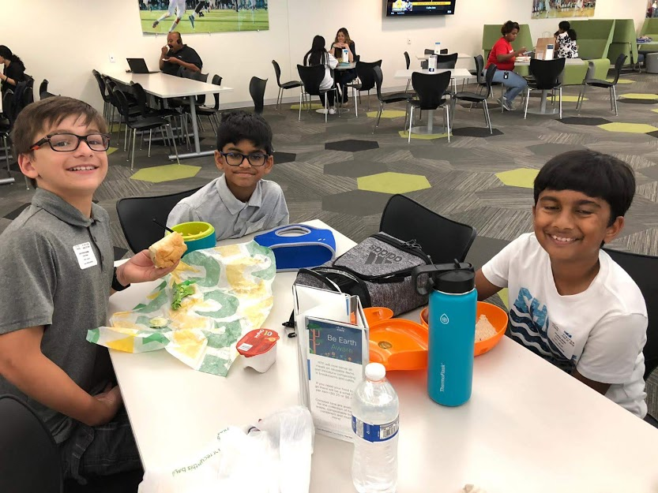
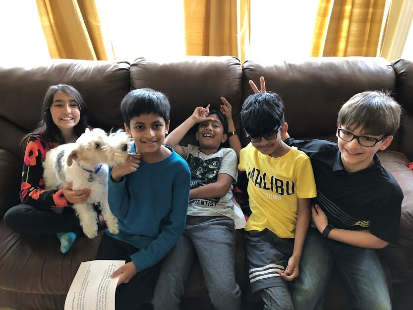
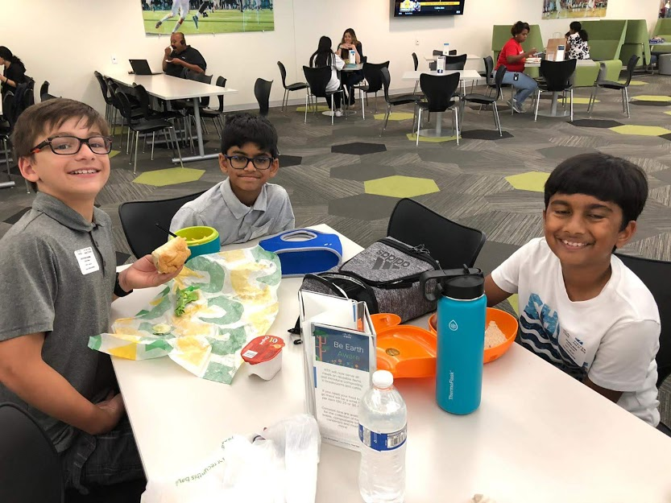
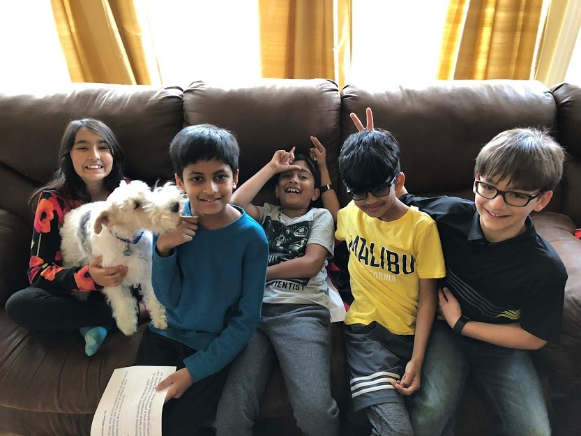

Pictures from Regionals
 



The regional competition is the first competition that will actually count for your team. It consists of the three judging sessions and three robot game runs, similar to what the scrimmage was like , the only difference will be that they will be much more strict on rules. Also the regional competition will have a little different rules because the scrimmage helped the judges understand what will actually happen.The three judging sessions as usual, will be the project, Core values, and robot design. and the robot games will be exactly the same as the scrimmage except they will be less lenient. The project judging session will be about your research project and they will judge you on how you presented it, as well as your research and Outreach.
We learned many things from our regional competition, such as: how are robots consistency was, and how we could add to our project such as telling people about what we're doing, we also figured out how are team dealt with a lot of stress oh, so that we could get less stressful meetings and know how to prevent stress. The regional competition was very Important for us so that state competition wood be stronger.
-Mehr Kapoor


We learned a lot from the state competition, such as: how other robots were built, how we dealt with stress, and how quickly we can react to different things. they had a lot of games and bouncy houses so it also helped us see how focused we could be, and how we can multitask fun with our seriousness. we had to rearrange the order of how we did our missions, so that put under stress, but even though it happened none of us had too big of a problem.
-Zach Sharma